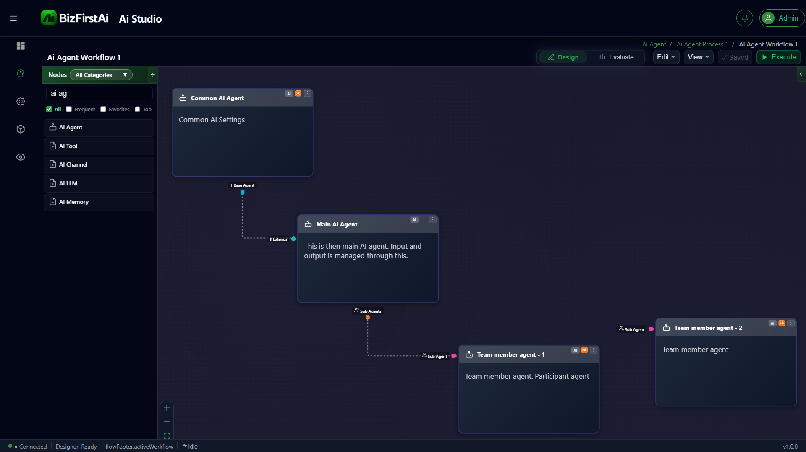

Deep AI Agent
A deep (hierarchical) AI Agent topology where a root base agent provides shared configuration, an orchestrating main agent manages all I/O, and multiple participant sub-agents handle delegated subtasks in parallel or in sequence.

Agent Hierarchy Diagram
Agent Roles
Common Ai Agent
Holds shared AI settings — LLM provider, memory store, common tools — that all agents in the hierarchy inherit. Defined once, consumed by every agent that extends it.
Main AI Agent
"This is the main AI agent. Input and output is managed through this." All external workflow data enters and exits through this agent. It coordinates the team members.
Team Member Agent 1
"Team member agent. Participant agent." Receives delegated subtasks from the Main AI Agent and returns results. Specialised for a specific domain or action.
Team Member Agent 2
A second participant agent. Handles additional delegated subtasks in parallel or in sequence — enabling concurrent multi-agent execution within a single workflow.
How It Works
Common Ai Agent defines shared settings
The base agent holds the LLM configuration, memory provider, and any shared tools. Every agent in the tree that connects via It Extends automatically receives this configuration at design-time resolution.
Main AI Agent inherits and becomes the I/O boundary
The Main AI Agent extends Common Ai Agent via the It Extends port, receiving the consolidated base configuration. It is the single entry point for workflow input and the single exit point for output — no other agent handles external data directly.
Team Member Agents receive delegated subtasks
The Main AI Agent delegates specific subtasks to Team Member Agent 1 and Team Member Agent 2 via Sub Agent ports. The team members execute their tasks and return results to the orchestrator, which consolidates them into the final output.
Three-Layer Architecture
The deep agent pattern cleanly separates concerns across three layers:
Configuration Layer — Common Ai Agent
Shared AI settings (model, memory, tools) defined once and inherited by all agents. Change the LLM here and every agent in the tree gets the update automatically.
Orchestration Layer — Main AI Agent
The single I/O boundary. Receives workflow input, reasons over it, delegates to team members, and returns the consolidated result. Isolates internal complexity from the rest of the workflow.
Execution Layer — Team Member Agents
Specialised participants. Each handles a specific domain (e.g. data lookup, external API call, classification). Multiple team members can run in parallel, giving the topology horizontal scalability.
Node Reference
| Node | Role | Port Connections |
|---|---|---|
| Common Ai Agent | Base Agent | Provides config to Main AI Agent via It Extends |
| Main AI Agent | Orchestrator | Extends Common Ai Agent · delegates to both team members via Sub Agent · holds Input/Output for the workflow |
| Team Member Agent 1 | Participant Sub-Agent | Connected to Main AI Agent via Sub Agent port |
| Team Member Agent 2 | Participant Sub-Agent | Connected to Main AI Agent via Sub Agent port |